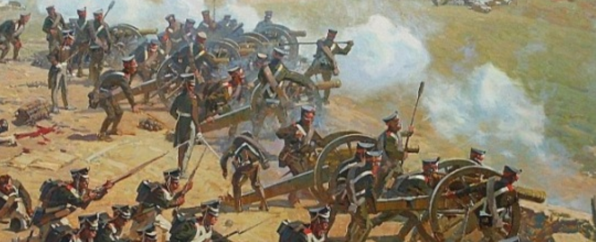
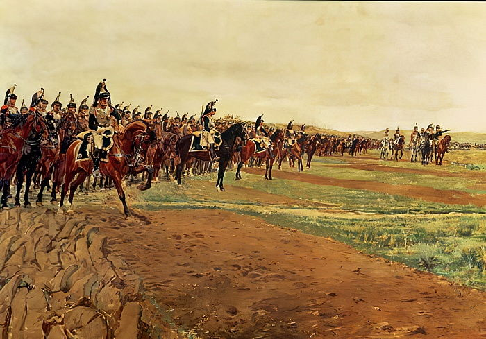
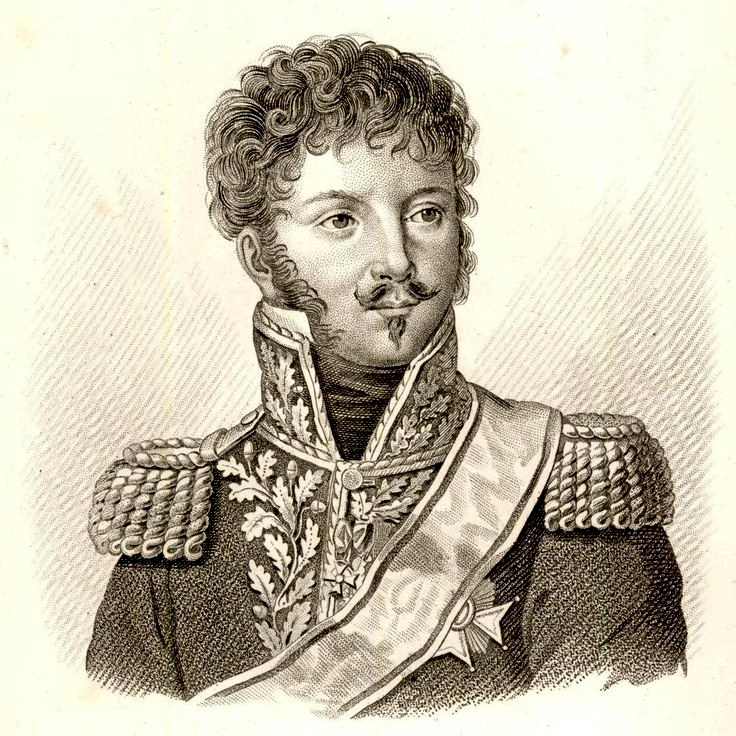
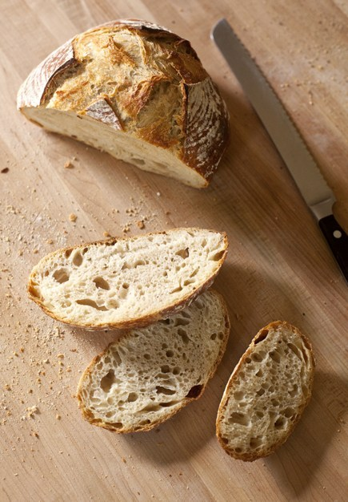
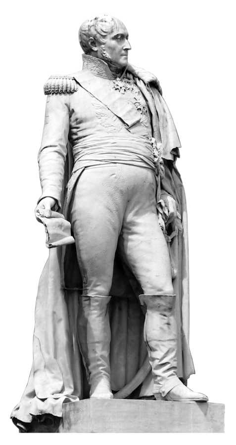
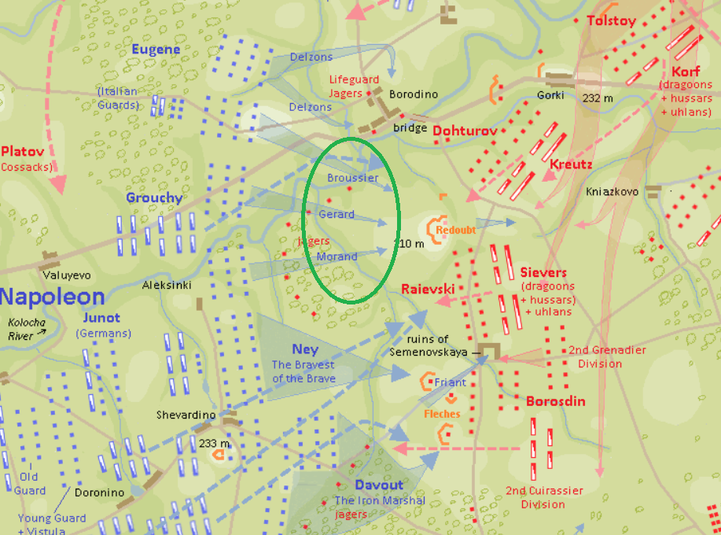

보로디노 전투 (10) - 빵껍질에 묻은 것
게시: 2020-09-28T06:30:23+09:00
오전 12시 즈음 프랑스군 좌익 뒤쪽에서 벌어진 러시아 기병대의 별 효과도 없던 돌격에 깜짝 놀란 나폴레옹이 전황을 다시 계산하느라 꾸물거리는 동안, 이때부터 거의 2시간 가량 본의 아니게 전투는 잠시 멈춤 상태가 되어 버렸습니다. 이미 전력을 다했던 프랑스군은 더 이상 공세를 계속할 힘이 없었고, 러시아군도 완전히 허물어진 중앙과 좌익 방어선을 재편성하느라 바빴기 때문이었습니다. 그러나 양군 모두, 한가지 병종만 쉬지 않고 전투를 계속 했습니다. 바로 포병대였습니다. 양군의 포병대는 멈춰서서 도열한 적군을 향해 열심히 포격을 가했습니다. 이 포격전에 있어서는 프랑스군이 러시아군보다는 더 우위에 있었습니다. 나폴레옹이 근위대는 거의 전투 현장에 투입하지 않았지만 근위 포병대 일부는 이 포격전에 투입했고 또 기본적으로 프랑스 포병들의 숙련도가 더 좋았기 때문이었습니다. 한 러시아 사단장은 바클레이에게 보낸 쪽지에서 '나폴레옹이 우리를 대포로 다 쓸어버리려고 작정한 모양'이라면서 이미 사단 병력의 절반이 포격에 쓰러졌다고 보고했습니다. 대부분의 러시아 병사들은 이런 포격 속에서도 꿋꿋하게 자리를 지켰지만, 적지 않은 숫자가 부상병을 부축한다거나 탄약이 떨어졌다는 핑계를 대고 후방의 움푹 파인 도랑 같은 곳에 머리를 쳐박고 웅크렸습니다. 이런 상황일 수록 지휘관이 모범을 보여야 했습니다. 바클레이는 일부러 프랑스군의 대포알이 날아오는 곳에 자리를 잡고 앉아서 점심 식사를 그 쪽으로 가져오라고 지시하기도 했습니다.

(보로디노 전투에서의 러시아군 포병대입니다.) 중앙부의 라에프스키 보루를 재점령한 러시아군은 언덕 아래에 포진한 프랑스군에 대해 쉴새없이 대포알을 날려보냈습니다. 그런데 라에프스키 보루 아래에는 뮈라의 예비 기병대가 도열해있었습니다. 이들은 라에프스키 보루를 공격하던 모랑 사단을 지원하기 위해 도열해 있었으나 기병대가 성벽에 대고 돌격을 할 수는 없었으므로 일단 대기 중이었습니다. 러시아군의 대포알은 큼직한 타겟인 이들을 노리고 날아들었습니다. 하지만 라에프스키 보루가 러시아군에게 재탈환된 뒤에도 후퇴 명령은 없었으니 일단 기병대는 거기에 그대로 있어야 했습니다. 기병 군단 전체가 후퇴를 하는 것은 자칫 하다가는 프랑스군이 패배하여 전면 후퇴히는 것으로 피아 모두에게 오해를 일으킬 수 있는 중대한 일이었으니 뮈라로서도 포탄이 날아오지 않을 저 멀리 후방으로 후퇴하라는 명령을 내릴 수는 없었습니다. 게다가 이들은 혹시라도 러시아 기병대가 불시에 돌격하여 아군 포병들을 노릴 때를 대비하여 적진과 아군 포병대 사이에서 방어선 역할을 해야 했습니다. 결과적으로 현대전으로 치자면 소중하고 연약한 전투기들을 적의 포탄이 떨어지는 전장에 가지런히 도열시켜 놓은 꼴이 되어버렸습니다. 지금 입장에서 보면 어이가 없는 바보짓이었지만, 파괴력과 명중률이 크게 떨어졌던 당시 대포의 성능을 감안하면 전체 군의 사기와 돌격시의 효율을 고려할 때 종종 벌어지는 일이었습니다. 기억들 하시겠지만 이 날 아침 6시에 전투가 시작될 때도, 양군 보병부대는 서로의 대포 사정거리 안에서 도열한 채로 전투를 시작했고 '전진 앞으로' 명령이 떨어지기 전까지는 무자비한 상대 대포알에 속수무책으로 당하면서도 대오를 유지하고 있어야 햤습니다. 보병 연대들도 현장에 있었는데, 일부 사단은 장교들을 제외한 병사들은 땅에 엎드리게 허락하여 포격 피해를 최소화시켰습니다. 그러나 기병대는 말 안장 위에 버티고 있어야 했습니다.

(프랑스군 흉갑기병대의 모습입니다. 원래 이건 아우스테를리츠에서의 모습이긴 합니다만 어차피 상상도인지라 별 상관은 없네요.) 그러나 이런 이야기는 전투 현장에서 직접 대포알을 맞아야 했던 기병대원들에게는 전혀 위로가 되지 않는 소리였습니다. 곳곳에서 대포알에 직격당해 붉은 안개 속에 투구와 강철 흉갑판이 살점과 함께 날아다녔습니다. 작센 기병대의 로트 본 쉬레켄슈타인(Roth von Schreckenstein)은 이 상황을 '기병대가 해야 할 일로서는 가장 불쾌한 일'이라고 불평했습니다. 화약 무기 시대에 칼 한자루만 손에 쥐고도 기병대가 보병들에게 공포의 대상이 될 수 있었던 것은 바람처럼 달리는 스피드 때문이었는데, 그런 장점을 모두 포기하고 그저 가만히 서서 대포알을 맞는 것이 기병대에게 일어날 수 있는 최악의 신세였으니까요. 흉갑기병대의 마를로(Jean Breaut des Marlots) 대위의 기록은 더 생생합니다. 그는 포격을 받는 중대원들의 사기가 죽지 않도록 대오를 오가며 격려의 말을 계속 건넸습니다. 그가 그라몽(Grammont)이라는 이름의 소위에게 그 씩씩한 태도에 대해 칭찬의 말을 하자, 그라몽 소위는 이렇게 대답했습니다. "부족한 게 아무 것도 없습니다만 딱 하나, 물 한 잔만 마실 수 있다면..." 그라몽 소위가 말을 마치지 못한 것은 바로 다음 순간 날아든 대포알이 그라몽을 두동강 냈기 때문이었습니다. 이 참상에도 굽히지 않고 마를로 대위는 그 옆의 다른 중위에게 므슈 그라몽을 잃게 되어 참 유감이라는 말을 했습니다. 그러나 그 중위도 대위에게 뭐라고 대꾸하기 전에 날아든 대포알에 그의 말과 함께 피떡이 되어 나가 떨어졌습니다. 마를로 대위의 기록에 따르면 이런 일이 수백 건에 달했답니다.

(몽브렁 장군입니다. 그는 중기병대 전문 지휘관으로 일찍부터 이름을 떨쳤는데, 그래서 스페인 소모시에라 고갯길에서의 유명한 폴란드 기병 돌격을 몽브렁이 지휘한 것으로 소문이 나기도 했습니다. 쿨한 성격의 그는 그런 소문을 들을 때마다 말도 안되는 소리라고 자신이 직접 해명했지요. 그런 그가 나폴레옹의 눈 밖에 난 적이 있었는데 그가 스페인에서 복무할 때 어떤 귀부인을 보호하느라 허락없이 군무를 이탈했기 때문이었습니다. 그 귀부인은 그런 로맨틱한 기사도의 몽브렁과 결혼하는 아름다운 결말이 이루어졌지만 나폴레옹의 분노 때문에 그는 한때 지휘권을 박탈당하기도 했습니다.)
대포알에는 눈이 없기 때문에 사병이고 장군이고 가리지 않았습니다. 제2 기병군단의 최고 지휘관인 몽브렁(Louis-Pierre Montbrun)마저도 희생자가 되었습니다. 그가 몸을 옆으로 돌리고 있을 때 대포알이 날아들어 그의 한 쪽 옆구리에서 다른 쪽 옆구리를 반쯤 스치며 지나갔습니다. 그는 큰 부상을 입고 말에서 떨어지며 '멋진 포격이군'이라고 말했다고 전해집니다. 실려간 그는 결국 사망했습니다. 다른 흉갑기병인 티리옹(Auguste Thirion)도 이 때의 경험을 기록했습니다. 포격에 의한 사상자가 계속 늘어나자, 바로 옆에 서있던 동료가 겁에 질리고 초조한 나머지 금방이라도 말머리를 돌려 도망칠 것 같은 기색을 보였습니다. 티리옹은 그를 진정시키려고 아끼고 아꼈던 작은 빵껍질 조각을 품에서 꺼내 동료에게 주려 했습니다. 그러나 동료가 그걸 받아들기도 전에 그 동료의 머리가 수박처럼 깨져 사방으로 튀었습니다. 그 와중에도 너무나 배가 고팠던 티리옹은 손에 든 빵껍질에서 동료의 뇌 조각들을 털어낸 뒤 본인이 그걸 먹었습니다.

(프랑스군이 1812년 원정을 준비하며 폴란드를 통과할 때, 폴란드 농민들은 프랑스 병사들이 자신들로부터 징발한 빵의 속살만 파먹는 모습을 보고 '배가 부른 모양'이라며 무척 분개했지만, 실은 병사들은 딱딱한 빵껍질을 마치 누릉지처럼 따로 모아두는 경우가 많았습니다. 딱딱한 빵껍질은 잘 상하지 않았기 때문에 보존 식품으로 꽤 유용했기 때문입니다.) 티리옹 뿐만 아니라 모든 병사들이 배가 고팠고 목이 말랐습니다. 말들은 더욱 고생이 심했습니다. 허기와 갈증 뿐이면 양반이었고, 적지 않은 사람들이 이질설사에 시달리고 있었습니다. 그 날 아침에 전진 명령이 떨어졌을 때도 몇몇 병사들은 긴장감이 풀려서 그랬는지 설사가 도져서 그랬는지 허겁지겁 대오 옆으로 바지를 내리며 뛰어가 쭈그리고 앉아야 했습니다. 이때도 마찬가지였습니다. 참모 장교였던 파예(Louis Planat de la Faye) 중위는 안장에서 내릴 수도 없는 그런 상황에서, 대포알 뿐만 아니라 설사 신호가 계속 날아들어 정말 미칠 지경이었다고 기록에 남겼습니다. 그의 기록에는 '내가 이 고통을 어떻게 해결했는지 자세히 쓰지는 않겠고, 단지 난 그 날 2장의 손수건을 주변 참호에 버렸다고만 말하겠다' 라고 되어 있습니다. 기병대의 이런 수난은 오후 2시 넘어서까지 계속 되었습니다. 상황을 제대로 파악하려는 나폴레옹에게 각기 다른 평가가 보고되었기 때문이었습니다. 지원 병력을 요청하러 달려온 뮈라의 수석 참모 벨리아르(Augustin Daniel Belliard)는 러시아군이 대혼란 속에 빠졌기 때문에 근위대를 투입하여 한번만 더 강력한 공세를 취하면 전쟁을 종결지을 수 있다고 보고했습니다. 그러나 보로디노 전투 내내 나폴레옹의 옆을 지키다 나폴레옹이 전황을 파악해보라고 파견했던 베시에르(Bessieres)는 돌아와서 러시아군은 최전방 뒤에 제2 전열이 건재하며, 그들은 오히려 공세를 준비 중이라고 보고했습니다. 나폴레옹은 불안했습니다. 결국 그는 마지막 예비대로 남겨 두었던 근위대를 투입할 시기는 아직 아니라고 판단하고 이미 전선에 투입된 기존 병력들을 재정돈하여 다시 공세를 취하라고 지시했습니다. 그는 이런 교착 상태를 돌파하기 위해 기병대를 적극 활용하라고 지시했습니다.

(벨리아르 장군입니다. 그도 프랑스 대혁명 이후 장교가 된 사람이었고, 이집트 원정에도 참여했으나 나폴레옹에 의해 이집트에 버려진 뒤 영국군에 항복해야 했던 잔존 병력 중 하나였습니다. 그는 1805년부터 뮈라 밑에서 일했고, 이후에는 조제프 밑에서 스페인에서 복무했습니다. 그는 백일천하 떄 다시 나폴레옹 편에 붙었다가 워털루 이후 투옥되기도 했습니다만 결국 다시 복권되었습니다.)
다시 시작된 공세는 러시아군 좌익에 대해서도 집요하게 이루어졌지만 중앙에서도 치열하게 전개되었습니다. 외젠이 병력을 끌어모아 이 모든 포격의 중심지인 라에프스키 보루를 재탈환하기로 한 것입니다. 그는 보로디노 마을 공격에 나선 델존 사단을 빼고 제라르(Gerard), 브루시에(Broussier), 모랑(Morand)의 3개 사단을 정렬시켜 공격 준비를 시작했습니다. 3개 사단이 밀집된 이 묵직한 공격대의 좌우 양익은 기병군단들이 호위했습니다. 좌익은 그루시(Grouchy)의 제3 기병군단이, 우익에는 라 투르-모부르의 제4 기병군단과 쓰러진 몽브렁 대신 콜랭쿠르(Caulaincourt)가 지휘하는 제2 기병군단이 포진했습니다. 이 집결 과정이 또 1시간 정도 흘렀고, 전진은 3시에 시작되었습니다.

(가운데의 초록색 타원 속에 제라즈, 브루시에, 모랑의 3개 사단이 라에프스키 보루를 향해 전진하는 모습이 보입니다.) 그런데 여기서 러시아군이 기대하지 않았던 공격이 진행되었습니다. 라에프스키 보루로부터의 포격에 여태까지 3시간 동안 일방적으로 당했던 기억이 너무 강렬해서였을까요 ? 프랑스군 공격대의 우익을 보호하게 되어 있던 라 투르-모부르와 콜랭쿠르의 기병 군단들이 점점 보폭을 빠르게 하더니, 마침내 선두의 보병 연대들을 앞질러 맨 앞에서 돌격을 시작했습니다. 아무리 급조된 보루라고 해도, 기병대가 성벽을 뛰어넘을 수는 없는 일이었습니다. 그러나 이들은 분명히 성벽을 향해 돌격을 시작했습니다. Source : 1812 Napoleon's Fatal March on Moscow by Adam Zamoyski
en.wikipedia.org/wiki/Battle_of_Borodino
napoleonistyka.atspace.com/Borodino_battle.htm
en.wikipedia.org/wiki/Augustin_Daniel_Belliard